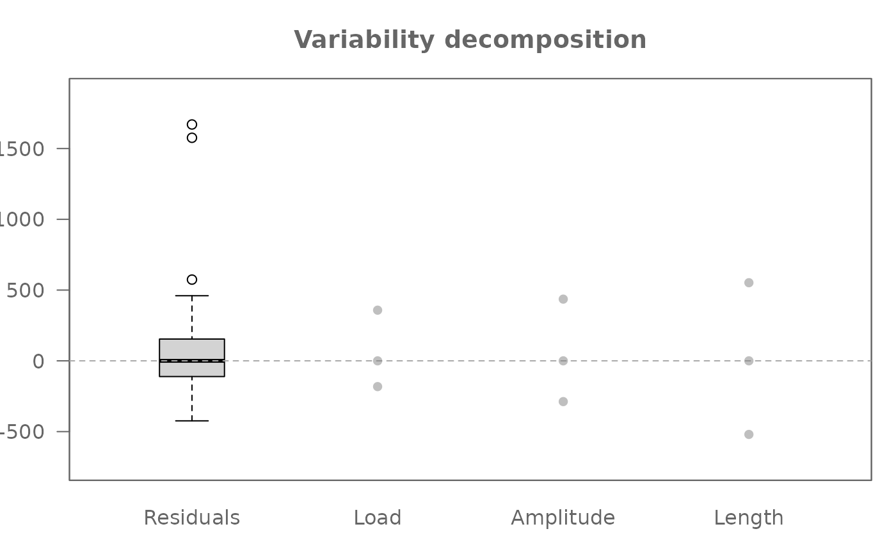
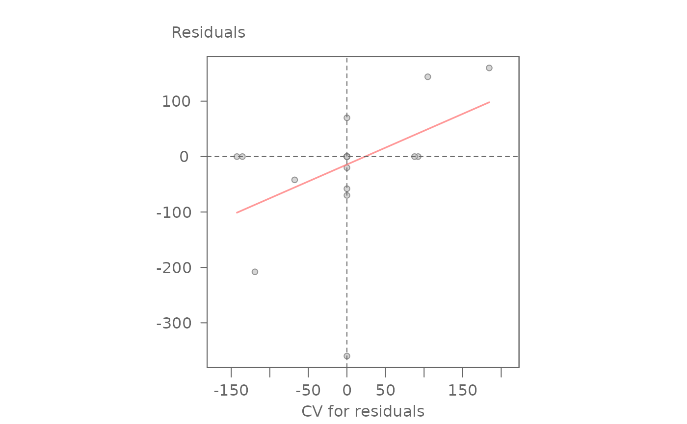
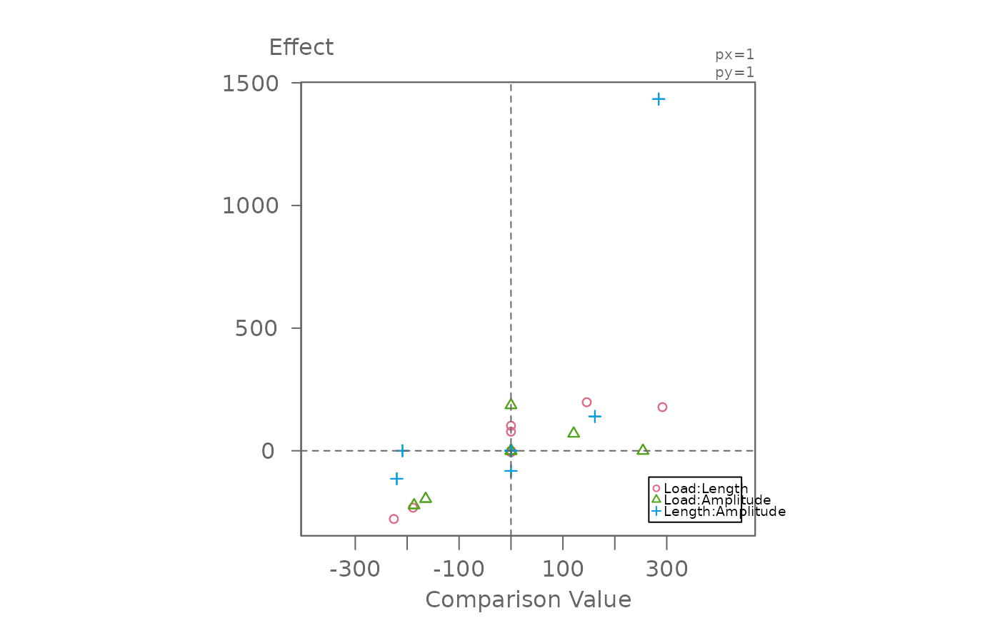
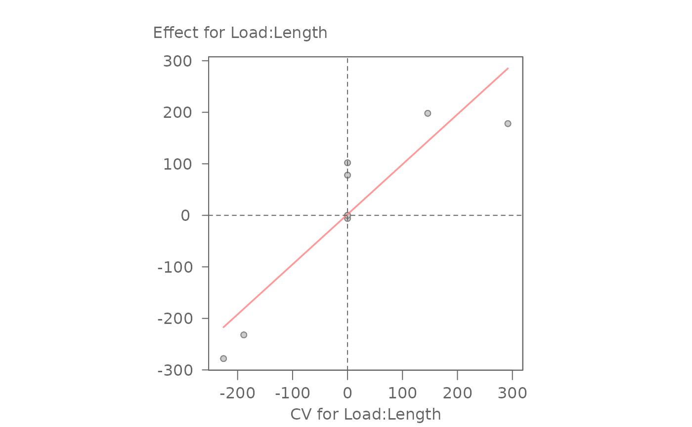
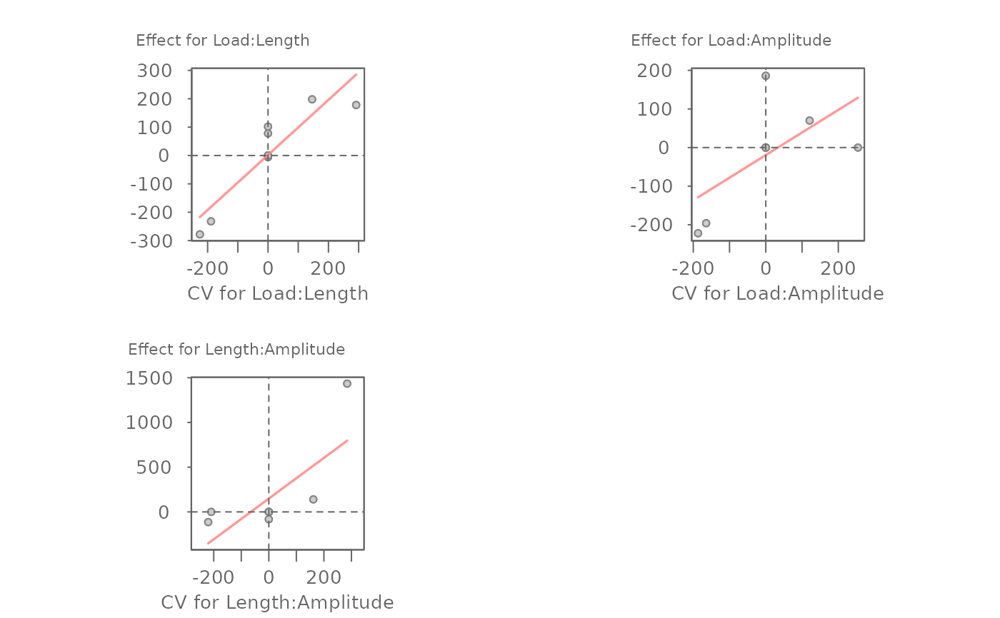

Apply median polish to a multi-way table to extract common, main, and interactive effects.
Usage
eda_npol(
dat,
response,
...,
max_order = 1,
maxiter = 20,
tolerance = 1e-06,
stat = median,
p = 1,
tukey = FALSE,
base = exp(1)
)Arguments
- dat
A data frame in long form containing the response and factor variables.
- response
The response variable (must be numeric). Note that nesting is not currently supported.
- ...
Unquoted factor variable names.
- max_order
The maximum number of factors to combine for interaction effects. Defaults to 1 (main effects only).
- maxiter
Maximum number of iterations for the median polish algorithm.
- tolerance
Convergence threshold for median polish adjustments.
- stat
Location statistic to use. Defaults to
median. While flexible, resistant statistics likemedianare strongly recommended to align with Exploratory Data Analysis (EDA) principles. Usingmeantransforms the decomposition into a standard ANOVA-like fit.- p
Re-expression power parameter.
- tukey
Boolean determining if Tukey's power transformation should be used.
- base
Base used with the
log()function ifp = 0.
Value
A list of class eda_npol containing:
- global
The estimated common effect.
- response
Response column name.
- effects
A nested list of effects, where names correspond to margins (e.g., "A", "A:B").
- long
A dataframe including residuals, a composite comparison value (cv) for backward compatibility, and fits.
- cv
A list containing detailed comparison values. Names correspond to the interaction margin (e.g., "A:B") or "residuals" for the n-way residual CV. This component is empty if a main-effect model is run (i.e.
max_order = 1)- converged
Boolean indicating if convergence was reached.
- iter
The number of iterations performed.
- fitted_values
The sum of common and all extracted margin effects.
- power
The power transformation applied.
Details
This function implements the "sweeping approach" to data
decomposition. The response is modeled as a sum of components: a common
value, main effects for each factor, and interactive overlays for factor
combinations up to max_order.
In unreplicated tables (one observation per cell), setting max_order
to the total number of factors will result in zero residuals as all
variation is swept into the highest-order interaction.
If replicates are present (i.e. more than one response value per unique
combination of factor levels), the values are combined into a single value
using the function defined by the stat argument).
The Comparison Value (cv) generated in the long component of the output
is computed differently depending on whether the model is run in main-effect
mode (i.e. max_order = 1) or in full-effect mode
(i.e. max_order > 1).
In main-effect mode, the cv column represents the composite comparison value. This value is used to diagnose nonadditivity that is embedded within the residuals when interactions have not been explicitly separated.
$$ CV_{composite} = \frac{\sum_{1 \le i < j \le n} \hat{a}_i \hat{a}_j}{m} $$
where: \(n\) is the number of factors, \(m\) is the estimated common value, \(\hat{a}_i\) and \(\hat{a}_j\) are the estimated main effects for the specific levels of factors \(i\) and \(j\).
In full-effect mode, the two-factor interactions have already been
swept out into their own overlays. Therefore, the cv column in long
represents the product of all main effects divided by the common term \(m\)
raised to the power of \((n−1)\). For a model with \(n\) factors, this
gives us:
$$ CV_{residual} = \frac{\prod_{i=1}^{n} \hat{a}_i}{m^{n-1}} $$
For a standard 3-factor layout (factors \(a\), \(b\), and \(c\)), the equation simplifies to the triple-product formula,
$$ CV_{ABC} = \frac{\hat{a}_i \hat{b}_j \hat{c}_k}{m^2} $$
where \(\hat{a}_i\), \(\hat{b}_j\), \(\hat{c}_k\) represent the main effects for each factor.
References
Cook, N. R. (1985). Three-Way Analyses. In D. C. Hoaglin, F. Mosteller, & J. W. Tukey (Eds.), Exploring Data Tables, Trends, and Shapes (pp. 125-188). New York: Wiley.
Emerson, J. D., & Wong, G. Y. (1983). Resistant Nonadditive Fits for Two-Way Tables. In D. C. Hoaglin, F. Mosteller, & J. W. Tukey (Eds.), Understanding Robust and Exploratory Data Analysis (pp. 67-124). New York: Wiley.
See also
eda_pol for an implementation of the median polish on a two-way (two factor) table and, eda_mean_sweep for a sweeping implementation using the mean instead of the median.
Examples
# Main effect median polish (i.e. no interaction)
M1 <- eda_npol(yarn, Cycles, Load, Length, Amplitude)
plot(M1) # Plot effect values and residuals

plot(M1, plot = "diagnostic") # Plot residuals vs comparison value
 #> int Comparison Value^1
#> 114.231269 1.292551
# Full effect median polish (i.e. include two-way interactions)
M2 <- eda_npol(yarn, Cycles, Load, Length, Amplitude, max_order = 2)
plot(M2, plot = "diagnostic") # Plot residuals vs higher-order CV
#> int Comparison Value^1
#> 114.231269 1.292551
# Full effect median polish (i.e. include two-way interactions)
M2 <- eda_npol(yarn, Cycles, Load, Length, Amplitude, max_order = 2)
plot(M2, plot = "diagnostic") # Plot residuals vs higher-order CV

#> int CV for residuals^1
#> -14.3106101 0.6090007
# Overlay all two-way interaction diagnostics
plot(M2, plot = "diagnostic", margin = "all")
#> For 'margin = "all"', regression lines are disabled to avoid confusion.

# Generate the diagnostic plot for a specific two-way interaction
plot(M2, plot = "diagnostic", margin = "Load:Length")

#> int CV for Load:Length^1
#> 1.9248763 0.9706704
# Generate side-by-side diagnostic plots for all two-way interactions
numplots <- length(M2$cv) - 1
nameplots <- names(M2$cv)[-(numplots+1)]
nc <- ceiling(sqrt(numplots)) # number of columns
nr <- ceiling(numplots / nc) # number of row
OP <- par(mfrow=c(nr,nc))
invisible(sapply(nameplots, \(x) plot(M2, plot="diagnostic", margin = x, reg=TRUE)))
#> int CV for Load:Length^1
#> 1.9248763 0.9706704
#> int CV for Load:Amplitude^1
#> -19.5494337 0.5854442
#> int CV for Length:Amplitude^1
#> 148.786019 2.275077
par(OP)
